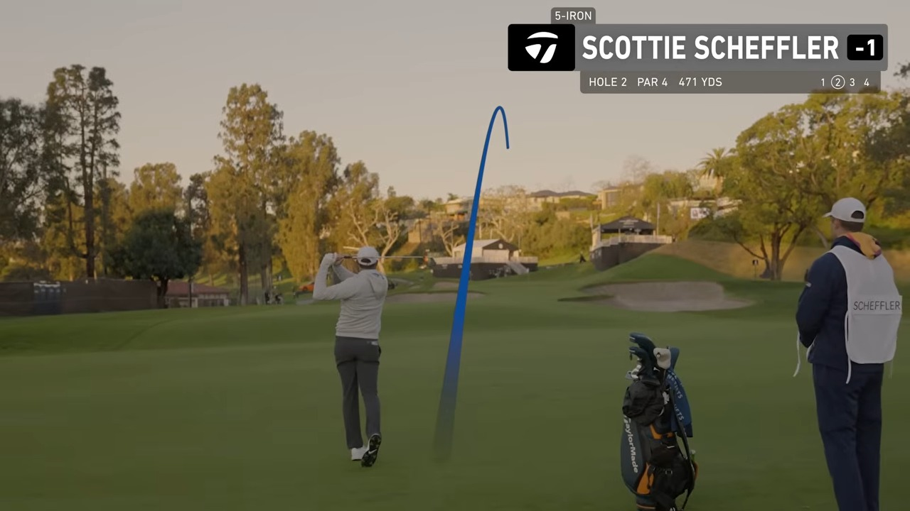
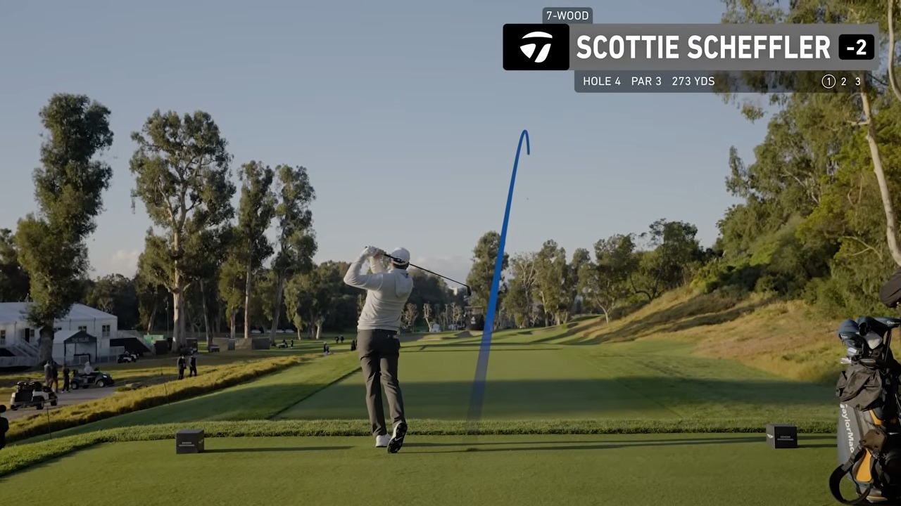
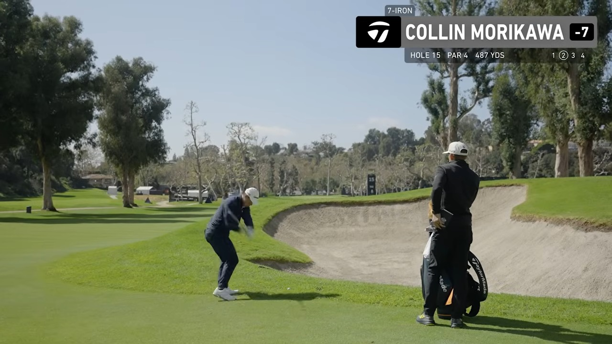
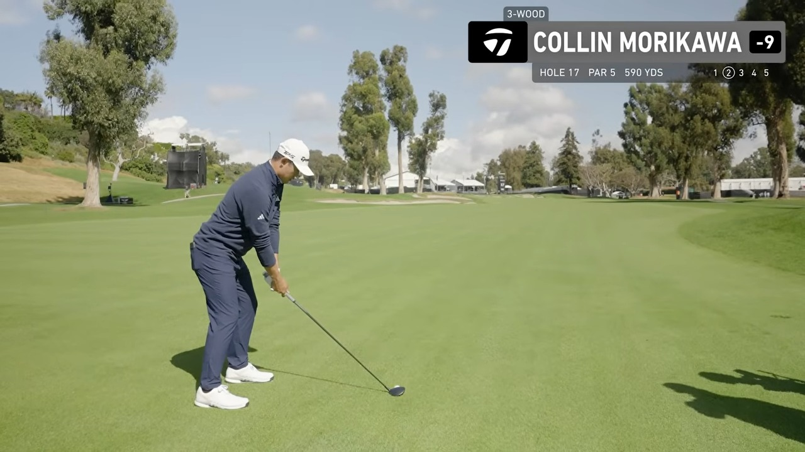
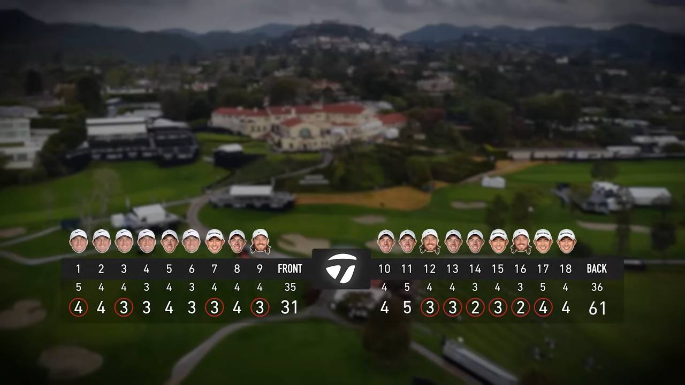

Executive summary
The club is chosen for the miss, not only for the number
The video looks like a highlight reel, but it quietly shows a repeatable decision system. Off the tee, the players first decide which side of the hole creates the cleanest angle. Into the green, they adjust the raw yardage for slope, wind, firmness, spin, and the location of the safe miss. Around the green, they choose trajectory and landing point before choosing the wedge.
The team makes its score in two different ways. The front nine is patient: Scottie supplies two early birdies, Collin adds one, and Tommy closes the nine with another. The back nine is a run of six consecutive birdies from holes 12 through 17, made by three different players. Best ball rewards aggressive upside, but the shot selection itself is rarely reckless.
- Scottie uses loft for versatility. His 7-wood replaces a 3-iron when he wants height from rough, stopping power into greens, or the option to take yardage off.
- Rory changes the geometry of the hole. A 3-wood is a position club on holes 5 and 10; driver is used when carrying trouble or taking the aggressive side creates a shorter approach.
- Tommy's iron choices protect trajectory. The 7-iron from 174 uphill and 8-iron from 179 show how he keeps a full, predictable flight instead of forcing a shorter club.
- Collin works from a stock shape. His fade appears off the tee and into greens. The shot starts at a safe line, then uses curve to approach the target.
- Distance is a condition, not an answer. “163” becomes an 8-iron because it plays five yards downhill; “130” becomes a 9-iron because Rory wants spin into the wind.
Evidence boundary. Club and distance are recorded only when spoken or shown in the video. “Not stated” means the edit does not provide enough evidence; no club has been inferred from appearance alone. The broadcast graphic on hole 16 says “DRIVER,” while the commentary says 8-iron and the image clearly shows an iron. This article records the spoken 8-iron and flags the graphic as an apparent production error.
The decision model
Five questions sit between the yardage and the swing
- What is the effective distance? Start with the number, then add or subtract slope, wind, temperature, lie, and firmness.
- Where can the ball finish safely? At Riviera, short-left, below the hole, or the wide side of the green is often better than a pin-high miss with no green to work with.
- What flight fits the corridor? Fade, draw, hold-off, high landing shot, and low spinner are different tools even when the carry number is identical.
- What is the next shot? A tee shot is good when it creates a playable angle. An approach is good when it leaves an uphill putt. The current shot is evaluated by the next one.
- Can the stock swing produce it? The players rarely manufacture maximum speed. They choose a club that lets a familiar motion produce the required window.

Shot-by-shot log
Every scoring shot shown in the edit
The distance column uses the number stated by the commentary, player, caddie, or on-screen hole graphic. Tee-shot rows use the hole yardage only as context; they do not claim the player carried the ball that distance.
| Hole | Player · shot | Club | Distance / context | Intent and outcome | Time |
|---|---|---|---|---|---|
| 1 | Scottie · tee | Driver | Par 5 · 503 yd; fairway ends about 315 | Starts right; runs through the fairway but remains playable. | 1:05 |
| 1 | Scottie · approach | 6-iron | 183 yd | Accepts short-left as the good miss; finishes there with green to work with. | 1:20 |
| 1 | Scottie · pitch | Not stated | Not stated | Checks beside the hole and leaves a tap-in. | 1:40 |
| 1 | Scottie · putt | Spider putter | Tap-in | Birdie; team moves to -1. | 1:50 |
| 2 | Scottie · tee | Driver | Par 4 · 471 yd | Required fade; finishes in the center of the narrow landing area. | 2:00 |
| 2 | Scottie · approach | 5-iron | 193 yd to hole; 176 front + 17 | Full flight into a difficult green; finishes about 20 feet away. | 2:40 |
| 2 | Scottie · first putt | Spider putter | About 20 ft | Uphill, hard right-to-left; finishes close. | 3:00 |
| 2 | Scottie · second putt | Spider putter | Tap-in | Par. | 3:10 |
| 3 | Scottie · tee | Driver | Par 4 · 434 yd | Center fairway; sets up a short iron. | 3:25 |
| 3 | Scottie · approach | 9-iron | 142 yd | Lands beyond the hole to use spin; pulls back farther than intended but stays on line. | 4:05 |
| 3 | Scottie · putt | Spider putter | Not stated | Downhill, left-to-right; catches the right side for birdie. | 4:35 |
| 4 | Scottie · tee | 7-wood | Par 3 · 273 yd; about 243 to front | High, soft flight reaches the front portion. Scottie says the club gives him more versatility than a 3-iron. | 5:00 |
| 4 | Scottie · first putt | Spider putter | Not stated | Downhill right-to-left; lips out. | 6:20 |
| 4 | Scottie · second putt | Spider putter | Tap-in | Par. | 6:30 |
| 5 | Rory · tee | 3-wood | Par 4 · 434 yd; fairway ends about 290 | Position play. Takes less than driver to guarantee the fairway. | 7:00 |
| 5 | Rory · approach | 8-iron | 163 yd; plays about 5 yd downhill | Uses the slope-adjusted number; finishes below the hole with a big-breaking putt. | 7:10 |
| 5 | Rory · first putt | Spider putter | Not stated | Aims far right; speed is good but the line needs slightly more. | 7:25 |
| 5 | Rory · second putt | Spider putter | Tap-in | Par. | 7:35 |
| 6 | Scottie · tee | 5-iron | Par 3 · 199 yd | Aims right of the central bunker and leaves the uphill birdie look. | 8:00 |
| 6 | Scottie · first putt | Spider putter | Not stated | Online but comes up just short. | 8:35 |
| 6 | Scottie · second putt | Spider putter | Tap-in | Par. | 8:40 |
| 7 | Collin · tee | Qi10 3-wood | Par 4 · 408 yd | Starts left and fades down the fairway, staying short of the bunker. | 9:00 |
| 7 | Collin · approach | 9-iron | 145 yd | Flies over the flag, spins back below the hole. | 9:30 |
| 7 | Collin · putt | Spider putter | Not stated | Uphill birdie; team moves to -3. | 9:55 |
| 8 | Rory · tee | Qi4D driver | Par 4 · 433 yd | Takes the aggressive left route over the split fairway and clears the bunkers. | 10:15 |
| 8 | Rory · approach | 9-iron | 130 yd | Controls spin back into the wind; finishes pin-high, just right, below the hole. | 10:30 |
| 8 | Rory · first putt | Spider putter | Not stated | Aggressive uphill line; lips out. | 10:50 |
| 8 | Rory · second putt | Spider putter | Long tap-in | Par. | 11:05 |
| 9 | Tommy · tee | Driver | Par 4 · 458 yd | Hangs right with the wind; finds a playable lie in the right rough. | 11:20 |
| 9 | Tommy · approach | 7-iron | 174 yd uphill | Starts just left of the hole and finishes in birdie range. | 11:30 |
| 9 | Tommy · putt | Spider putter | Not stated | Birdie; team turns in 31 (-4). | 12:05 |
| 10 | Rory · tee | 3-wood | Par 4 · 315 yd; 262 to carry center bunker | Aggressive line at the green; catches the bunker lip. | 12:30 |
| 10 | Rory · bunker | Not stated | Long bunker shot | Uses the upslope and firmer wet sand; lands beyond the hole with spin. | 12:45 |
| 10 | Rory · first putt | Spider putter | Not stated | Finishes just below the cup. | 13:00 |
| 10 | Rory · second putt | Spider putter | Tap-in | Par, a good result after the bunker. | 13:05 |
| 11 | Rory · tee | Driver | Par 5 · 583 yd | Tugged into the left rough and blocked by trees. | 13:30 |
| 11 | Rory · recovery | Fairway wood; model not stated | Not stated | Curves right-to-left from damp rough around the trees. | 13:50 |
| 11 | Rory · wedge | 60-degree | Not stated | High-spin attempt into a back-to-front green; spins off the front. | 14:05 |
| 11 | Rory · pitch | Wedge; loft not stated | Just short of green | Soft touch leaves a tap-in. | 14:15 |
| 11 | Rory · putt | Spider putter | Tap-in | Par 5. | 14:25 |
| 12 | Tommy · tee | Driver | Par 4 · 479 yd | Piped down the center. | 14:45 |
| 12 | Tommy · approach | 8-iron | 179 yd | Good line; the ball backs up and leaves 25–30 feet. | 14:50 |
| 12 | Tommy · putt | Spider putter | About 25–30 ft | Holes it for birdie; starts the six-birdie run. | 15:00 |
| 13 | Rory · tee | Driver | Par 4 · 459 yd | Tries to turn it right-to-left, pulls it left, but avoids the wash and keeps a wedge angle. | 15:25 |
| 13 | Rory · approach | Wedge; loft not stated | Not stated | Lands behind the hole with spin and leaves a downhill chance. | 15:40 |
| 13 | Rory · putt | Spider putter | Not stated | Center cup for birdie; team reaches -6. | 15:50 |
| 14 | Rory · tee | Iron not stated | Par 3 · 192 yd | Likes it immediately; finishes close enough for another birdie chance. | 16:15 |
| 14 | Rory · putt | Spider putter | Not stated | Birdie; three straight for the team. | 16:25 |
| 15 | Collin · tee | Driver | Par 4 · 487 yd | Uses his stock fade down the right; first cut but a shorter angle. | 16:55 |
| 15 | Collin · approach | 7-iron | 180 yd | Leaks slightly right but finishes pin-high below the hole. | 18:00 |
| 15 | Collin · putt | Spider putter | Not stated | Center cup for the fourth straight birdie. | 18:30 |
| 16 | Tommy · tee | 8-iron, spoken | Par 3 · 166 yd | Hold-off finish to the middle, pin-high. On-screen “DRIVER” label appears erroneous. | 18:50 |
| 16 | Tommy · putt | Spider putter | Not stated | Birdie; fifth in a row. | 19:05 |
| 17 | Collin · tee | Driver | Par 5 · 590 yd | Starts left and cuts back to the center. | 19:30 |
| 17 | Collin · second | 3-wood | 308 yd · downwind | Challenges the bunker about 50 yards short of the green; carries it and leaves an ideal pitch. | 20:00 |
| 17 | Collin · pitch | MG5 wedge | About 20 yd | Clips it with spin to remove the ridge from play; leaves the birdie putt. | 20:15 |
| 17 | Collin · putt | Spider putter | Not stated | Birdie; sixth straight and team reaches -10. | 20:25 |
| 18 | Collin · tee | Driver | Par 4 · 499 yd | New tee changes the line; drive cuts and just misses the fairway right. | 22:00 |
| 18 | Collin · approach | Not stated | 202 yd to hole; 184 front | Knock-down left-to-right around the trees; finishes just short-left in a good spot. | 22:25 |
| 18 | Collin · first putt | Spider putter | Not stated | Fast uphill/sidehill lag finishes close. | 22:40 |
| 18 | Collin · second putt | Spider putter | Tap-in | Par and a final score of 61. | 22:50 |
Club-use summary
What each player used in the shots shown
Counts below refer only to full shots explicitly identified in the edit. Putts are grouped separately, and generic pitches or bunker shots are not assigned a loft when the video does not state one.
Scottie Scheffler
Driver ×3 · 6-iron ×1 · 5-iron ×2 · 9-iron ×1 · 7-wood ×1 · one unidentified pitch · Spider putter. Pattern: uses loft and landing angle as tactical tools, especially the 7-wood on the 273-yard fourth.
Rory McIlroy
Driver ×3 · 3-wood ×2 from the tee · one unspecified fairway wood recovery · 8-iron ×1 · 9-iron ×1 · 60-degree wedge ×1 · two other wedge shots · one unidentified par-3 iron · Spider putter. Pattern: club choice changes the hole's geometry.
Tommy Fleetwood
Driver ×2 · 7-iron ×1 · 8-iron ×2 · Spider putter. Pattern: conservative start lines and full iron flights create predictable pin-high outcomes; his longest made putt comes after an 8-iron from 179.
Collin Morikawa
Driver ×3 · 3-wood ×2, once from the tee and once from 308 · 9-iron ×1 · 7-iron ×1 · MG5 wedge ×1 · one unidentified 202-yard approach · Spider putter. Pattern: stock fade, pin-high iron control, and spin to neutralize ridges.

Four decision styles
The players solve the same course with different defaults
| Player | Default pattern | Best example | What an amateur can copy |
|---|---|---|---|
| Scottie | High versatility; accept the smart side of the green. | 5-iron right of the bunker on 6; 7-wood for height on 4. | Choose the club that produces the safe landing window with a normal swing. |
| Rory | Change the route before changing the swing. | 3-wood layup on 5 versus driver over the left side on 8. | Pick a tee club from the desired approach angle, not habit. |
| Tommy | Predictable full-flight irons and controlled finish. | 7-iron from 174 uphill; 8-iron from 179. | Use enough club to keep tempo and trajectory stable. |
| Collin | Start at safety and curve toward the target. | 3-wood fade on 7; 7-iron to pin-high on 15. | Build strategy around your reliable shape instead of fighting it. |

Course management
Riviera keeps rewarding the player who plans one shot ahead
The recurring target is not “close to the flag.” It is “below the hole with an uphill putt.” Scottie leaves that look on 6, Collin on 7 and 15, and Rory on 8. The greens are severe enough that an approach finishing twelve feet above the cup may be worse than one finishing twenty feet below it.
The tee-shot decisions follow the same logic. Rory's 3-wood on 5 avoids a fairway that ends near 290. On 8, the split fairway makes driver attractive because his carry can remove the left-side bunkers. On 10, 3-wood is still enough to challenge a 262-yard bunker carry, but the miss demonstrates the cost: a difficult long bunker shot from the upslope.
The most revealing recovery is hole 11. Rory's drive finds the left rough behind trees. Instead of pitching out, he curves a fairway wood right-to-left from a damp lie. The aggressive second shot creates a short wedge, but the 60-degree spins off the green. Even elite execution cannot erase the tradeoff: every aggressive recovery transfers risk to the next shot.

Practical playbook
A simple club-selection routine to take to the course
- Write two numbers. Record the front and pin distance. The hole-2 exchange works because 176 front plus 17 produces a clear 193-yard task.
- Calculate effective carry. Adjust for slope and wind before touching a club. Rory's 163 plays about five down; Tommy's 174 is explicitly uphill.
- Name the no-go miss. The sixth has a bunker in the middle. The fifteenth demands a fade. A club is wrong if its normal dispersion brings the worst miss into play.
- Choose the landing window. Decide front, pin-high, or beyond the flag, then use spin and trajectory intentionally.
- Prefer a stock swing. If the shot requires maximum effort or an unfamiliar shape, take more club or choose a safer route.
- Grade the next shot. After impact, do not ask only whether it was close. Ask whether it left the intended angle, lie, and putt direction.
- Track club-plus-context. “7-iron: 174 uphill from light rough” is useful. “7-iron: 174” is not enough to learn from.
One-line decision card. Effective distance → safest landing zone → preferred shape → stock club → acceptable miss. Say the line before every approach for five rounds. The routine matters more than the sophistication of the calculation.
A useful source-check
The hole-16 graphic is wrong, and that matters
At 18:50, the on-screen club label reads “DRIVER” on a 166-yard par 3. The commentary identifies an 8-iron, and the club in Tommy's hands is visibly an iron. This is almost certainly a production-overlay error.
It is a small detail, but it demonstrates why a shot log should not trust one evidence channel blindly. Spoken commentary, on-screen graphics, player/caddie dialogue, and the visible action can disagree. Where they do, the article should preserve the conflict rather than silently selecting the most convenient answer.
My take
The best players make aggressive swings inside conservative decisions
The swings are spectacular, but the architecture is ordinary: narrow the problem, pick a safe reference, choose a familiar pattern, and accept a useful miss. That is why the round feels calm even when the team is chasing 59.
The sequence on 17 captures the whole idea. Collin's driver earns a center-fairway lie. The 3-wood from 308 does not need to reach the green; it only has to clear the bunker and leave the correct side. The wedge uses spin to remove a ridge. The putt becomes the easiest shot in the chain. Each club is selected to simplify the next decision.

Sources and method
What this article is based on
- TaylorMade Golf Canada · 18 Holes with the World's Best Golfers. Primary source for every club, distance, shot result, player quote, and timestamp.
- PGA Tour · Riviera Country Club course information. Course context only; the shot log follows the yardages displayed in the video.
Method: the video was reviewed frame by frame with the spoken caption stream and on-screen graphics. All article images are direct 1280×720 captures from the source video. Public captions were not exposed through YouTube's transcript panel, so this is a verified shot log rather than a claim of a complete verbatim transcript. Distances or clubs absent from the edit are marked “Not stated.”